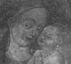
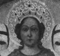
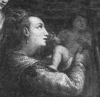
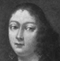

Collective Biographies of WomenAn Annotated Bibliography
Alison Booth
656.
Ragg, Laura M. Women Artists of Bologna. London: Methuen, 1907.
Search OCLC WorldCat for this title.
Search Google Books for this title.
Ragg, Laura M. Women Artists of Bologna. London: Methuen, 1907.
TOC: Caterina dei Vigri, the Nun; Properzia de' Rossi, the Sculptor; Lavinia Fontana, the Portrait Painter; Elisabetta Sirani, the Disciple of Guido Reni.
-
Madonna and Child
-
 Madonna Del Pomo
Madonna Del Pomo -
St. Ursula and her Maidens
-
 Lavinia Fontana
Lavinia Fontana -
 The Gozzadini Family
The Gozzadini Family -
Francis of France
-
Elisabetta Sirani
Search OCLC WorldCat for this title.
Search Google Books for this title.